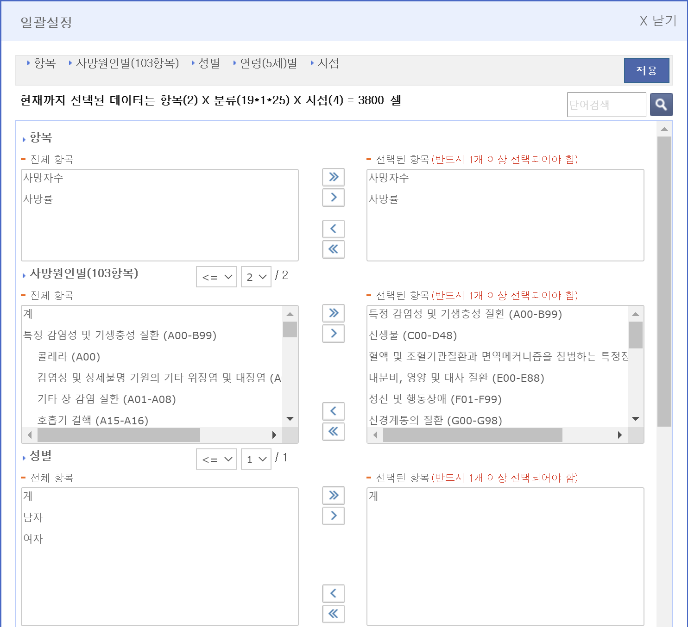

4 Data analysis with rmarkdown
과제 관련 공지
이번 과제는 rmarkdown 파일을 만드시고 아래 분석 내용을 그대로 따라하셔서 해당 Rmd 파일과 render을 수행한 pdf파일을 조교에게 보내주시면 되겠습니다. 잘 안되는 분들은 할 수 있는만큼 해보시고, 혹시 pdf 파일로 rendering이 되지 않는 분들은 Rmd 파일만이라도 보내주세요.
4.1 YAML data
---
title: "Analysis example"
author: "Haseong Kim"
output:
pdf_document:
latex_engine: xelatex
toc: yes
number_sections: TRUE
html_document:
toc: yes
number_sections: TRUE
mainfont: NanumGothic
---4.3 Data download
국가통계포털 사이트에서 국내통계 > 주제별통계 > 보건 > 사망원인통계 > 사망원인(103항목)/성/연령(5세)별 사망자수, 사망률 > 일괄설정 > 아래와같이 설정 > 적용 > 다운로드

다운로드한 excel 파일은 data 디렉토리에 cause_of_death.xlsx라는 이름으로 저장
4.4 Load excel data
library(readxl)
dat <- read_excel("data/cause_of_death.xlsx")
str(dat)4.5 Preprocessing
4.5.3 tidy 데이터 변환
dat4 <- dat3 %>%
pivot_longer(cols = starts_with("r"),
names_to = "year",
values_to = "death_rate") %>%
mutate(year=factor(gsub(pattern = "r", "", year)))
str(dat4)4.6 그래프 분석
4.6.1 사망원인에 따른 연도별 사망율 비교
ggplot(dat4, aes(x=year, y=death_rate)) +
geom_bar(stat="identity") +
facet_wrap(CoD~.)
cod2 <- lapply(strsplit(cod, split=" \\("), function(x){x[1]}) %>% unlist
dat4 %>%
mutate(CoD = factor(CoD, labels = cod2)) %>%
ggplot(aes(x=year, y=death_rate, fill=year)) +
geom_bar(stat="identity", width = 0.6) +
facet_wrap(CoD~.,
nrow=4,
scales = "free_y",
labeller = label_wrap_gen(width=30)) +
theme_bw() +
theme(strip.background =element_rect(fill="#eeeeee")) +
scale_fill_viridis_d(name="Year") +
xlab("Year") +
ylab("Death Rate") +
ggtitle("사망원인에 따른 연도별 사망율")4.7 나이별 사망율이 가장 높은 사망원인 탐색
ggplot(dat4, aes(x=CoD, y=death_rate)) +
geom_bar(stat="identity") +
facet_wrap(Age~.)
cod2 <- lapply(strsplit(cod, split=" \\("), function(x){x[1]}) %>% unlist
dat4 %>%
mutate(CoD = factor(CoD, labels = cod2)) %>%
ggplot(aes(x=CoD, y=death_rate, fill=year)) +
geom_bar(stat="identity", width = 0.6, position="dodge") +
facet_wrap(Age~.,
nrow=6,
scales = "free",
labeller = label_wrap_gen(width=30)) +
theme_bw() +
theme(strip.background =element_rect(fill="#eeeeee")) +
scale_fill_viridis_d(name="Year") +
xlab("Year") +
ylab("Death Rate") +
ggtitle("나이별 사망원인")
dat4 %>%
mutate(CoD = factor(CoD, labels = cod2)) %>%
ggplot(aes(x=death_rate, y=CoD, fill=year)) +
geom_bar(stat="identity", width = 0.6, position="dodge") +
facet_wrap(Age~.,
nrow=3,
scale = "free_x",
labeller = label_wrap_gen(width=30)) +
theme_bw() +
theme(strip.background =element_rect(fill="#eeeeee"),
axis.text.x = element_text(angle = 90, vjust = 0.5, hjust=1)
) +
scale_fill_viridis_d(name="Year") +
xlab("Year") +
ylab("Death Rate") +
ggtitle("나이별 사망원인") 
이 저작물은 크리에이티브 커먼즈 저작자표시-비영리-변경금지 4.0 국제 라이선스에 따라 이용할 수 있습니다.